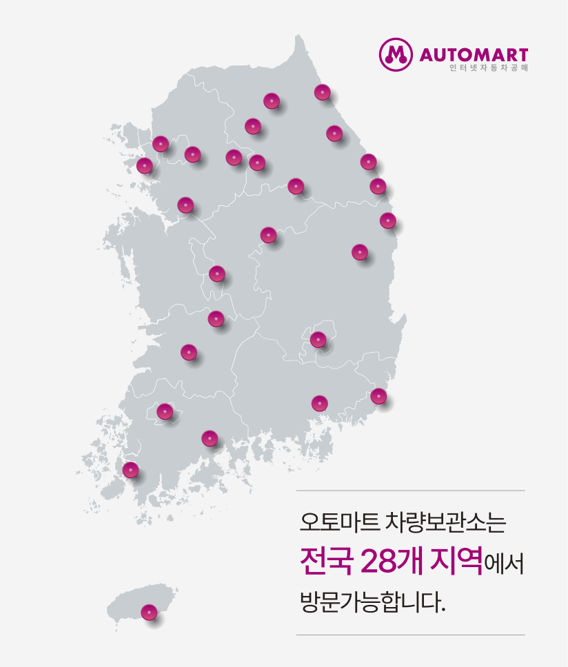

오토마트 차량보관소

보관소 방문시 필수 확인사항
[ 유의사항 ]
- - 보관소 방문시 신분증을 꼭 지참하기 바랍니다. 신분증을 제출하셔야 차량 확인을 할 수 있습니다.
- - 진행예정인(입찰기간이 아닌) 차량은 현장에서의 실물확인이 불가하므로 이점 반드시 주의하시기 바랍니다.
- - 차량은 해당 보관소를 방문하여 반드시 직접 확인하기 바랍니다.
- - [이용안내]에서 업무시간을 확인하시고, 보관소 주소 및 약도는 [찾아오시는길]의 내용을 참조하십시오.
- - [개인정보 관련 사진 및 영상 촬영 및 유포 금지]
- 1. (주)오토마트 홈페이지 또는 보관소 내 모든 차량의 사진, 영상 등을 소유자, 진행압류기관, 위탁보관기관등의 명시적 동의 없이 촬영하여 블로그, 유튜브, 인스타 등 SNS에 게시하거나 또는 상업적 목적으로 가공하여 제공하는 경우 개인정보보호법 위반으로 민,현사상 책임을 질 수 있습니다.
- 2. 개인소지 휴대폰 등을 이용해 사진, 영상 등을 촬영할 경우 법 위반 소지를 유의하시어 해당 차량을 특정할 수 있는 차량번호, 개인 연락처 등이 노출되지 않도록 유의하시기 바랍니다.
[ 차량 인수절차 및 필요서류 안내 ]
-
차량 출고는 기관의 허가를 통해 출고되므로
잔금납부후(이전후출고는 이전확인) 해당 기관으로 통보하시기
바랍니다.
-
낙찰후 15일까지 보관소에서 차량을 인수해야하며, 15일이후
출고시 보관료가 부가됩니다.
[ 오토마트 보관차량의 보관료 : 1일 6,000원, 그외 보관소는 해당
기관으로 문의 ]
-
차량 인수시 필요한 기본서류 (아래 서류 외의 해당 공고문 상에
필요서류가 추가로 있는 경우에는 추가 필요)
- 낙찰자 본인 출고 : 신분증
-
대리인 출고 : 대리인 신분증, 낙찰자 인감증명서(개인/법인),
인감날인된 위임장
( 단, 매매상사(개인사업)인 경우에 인감증명서 대신 자동차관리사업등록증, 명판(사용인감날인), 입찰서상 대리인의 종사원증으로 대체 가능 ) -
가족 출고 : 낙찰자 본인 출고로 인정
단, 가족을 증명하는 가족관계증명서 등의 증빙서류를 제출해야 하며, 외가 포함한 부모/자녀인 경우에만 가능. -
기업고객(법인/개인사업자(매매상사 등)) 출고
- 대표자 : 낙찰자 본인 출고로 인정 (대표자란 입찰서상에 대표자로 등록하여 입찰한 기업의 대표자)
- 담당자 : 낙찰자 본인 출고로 인정 (담당자란 입찰서상에 담당자로 등록하여 입찰한 기업소속의 직원)
※ 이전등록 후 출고 가능한 진행기관의 차량은 이전된 등록증을 추가
제출 해야한다.
※ 위임장 다운로드(특정 양식없음) : [ 위임장(아래한글) ] / [
위임장(엑셀) ] / [ 위임장(워드) ]
[ 오토마트 인천보관소 이용안내 ]
- - 차량의 실물확인은 입찰신청 기간중에만 확인이 가능합니다. (진행예정인 차량은 현장에서의 실물확인 불가)
- - 차량확인 가능시간 : 월요일 ~ 금요일 (10시~17시), 토요일 (10시~12시)
- - 점심시간 : 12시 ~ 13시 30분 (점심시간은 차량확인 불가)
-
-
기타 특이사항이 발생할 수도 있으므로 방문시에는 미리 연락하기
바랍니다.
( 특히 업무특성상 보관소 방문전에 반드시 사전 전화 통화후 내방하시기 바랍니다. )
[ 오토마트 인천보관소 주소 및 연락처 ]
※ 주소 :
인천광역시 중구 백운로387번길 53
※ 전화번호 :
032-578-0442
※ 팩스번호 :
032-578-0444